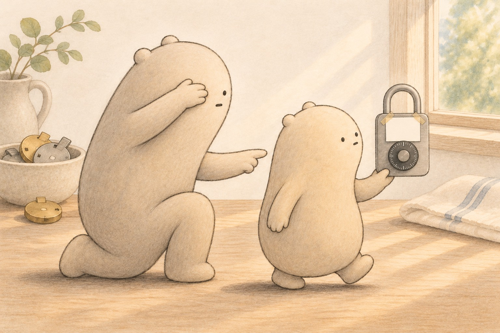

Today’s poem

The Secret on the Lock
Little Wonderer spun the black dial of a lock,
three turns to the right, tick, tick, tickety-tock.
“There are wheels in there, hiding, all stacked in a row,
and each has a notch where a fence wants to go.”
“Turn left, pass the first,” the big one said, “then
stop on the second, and back right again.
When all of the gates line up, one, two, three,
the fence will drop in, and the shackle swings free.”
“But what if I lose them?” the little one cried.
“Three numbers are slippery. They wriggle and hide!”
So out came a pencil, and out came some tape,
and a note went right onto the lock’s steely shape.
“Now I’ll never forget them! They’re right there in sight!”
Big Wonderer peeked through two mittens. “That’s right…
your secret is safe, for it never can go,
except that now everyone else gets to know.”